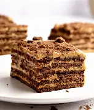

.png) Chocotorta!
Chocotorta!
Postre Argentino

La chocotorta argentina bien podría compararse con nuestra tradicional tarta de galletas de la abuela, aunque con unos ingredientes tradicionalmente argentinos como son las chocolinas y el dulce de leche, que convierten esta tarta en una auténtica delicia. A continuación, la receta paso a paso.
Ingredientes:
- 4 paquetes Galletitas chocolinas (paquetes grandes, aprox)
- 700 gr dulce de leche
- 500 gr queso crema (yo uso casancrem)
- Leche o café.
- Para decorar: dulce de leche, chocolate águila, chocolinas extra
Pasos:
- Poner leche en tarrito o bowl, ir mojando completamente, hundiendo las galletas en la leche sacarlas y colocar en fondo de molde desmoldable o de silicona. Tapar todo el fondo con Galletitas de la misma forma, previamente mojada en leche.
- Con batidor o batidor de mano unir en un bowl el queso crema y el dulce de leche. Agregar un poco de esta mezcla sobre las galletas.
- Volver a mojar galletas en leche mientras las van colocando sobre la mezcla de ddl y queso crema hasta que se tape esta por completo y volver a poner mezcla de ddl.
- Así sucesivamente hasta que no haya más mezcla de ddl. Que por último quede la mezcla.
- Decorar con chocolate, ddl y/o chocolinas para una linda presentación.
.